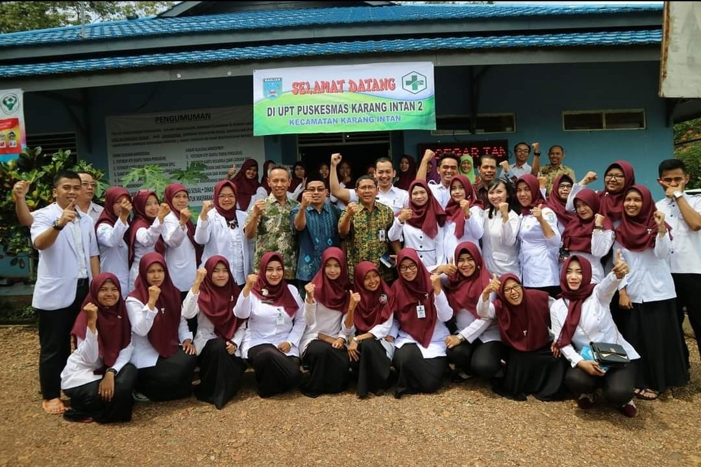

Puskesmas Karang Intan 2
Home
Layanan
Jenis Pelayanan
Jadwal Pelayanan
Persyaratan Pelayanan
Sistem, Mekanisme dan Prosedur Pasien
Rawat Inap
Profil
Visi, Misi, Motto & Tata Nilai
Kepala Puskesmas
Tentang Kami
Inovasi
GEPREK
Kunjungan Bumil, Anemia, Kek & Resti
Pelaksanaan Kelas Ibu Hamil
Pemberian PMT
Inovasi Kerjasama
Pengaduan Masyarakat
Hubungi
